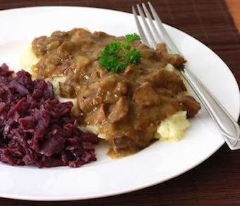
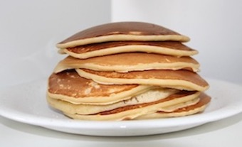
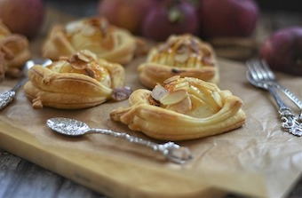
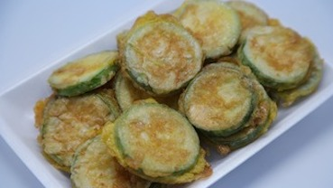
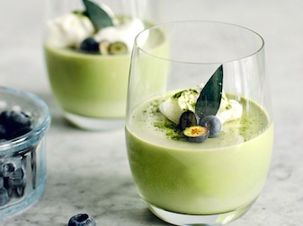

keuzemenu
- Herfst
- Winter
- Zomer
- Lente
Herfst gerechten
voorgerechten
hoofdgerechten
- 
hachee
Zuurkool
Lasagne met mozzarella, Champignons en boerenkool
nagerechten
- 
Appel-yoghurt-pannenkoeken
appelflappen
Pumpkin spice latte
Winter gerechten
Voorgerechten
Hollandse erwtenssnoep
Preisoep

Tempura spruitjes
Hoofdgerechten
Runderstoofpot met rodekool
Geroosterde groenten
Aardappelprei schotel
Nagerechten

Geroosterde peer met vegan 'yoghurt'ijs en amandelcrunch
- 
Mini tarte tatin met vanillemascarpone

Marshmallow-bananensplit met chocoladesaus uit een gourmetpannetje
Zomer gerechten
Voorgerechten
Gezonde omeletwrap met groente en ricotta
Bruschetta met ricotta, grapefruit en basilicum met Martini Spritzante
- 
Courgettekoekjes
Hoofdgerechten
BBQ biefstuk met koffierub en groene asperges
Sandwich met rucolaspread
Pastasalade met gegrilde meloen, rauwe ham, peultjes en rucola
Nagerechten
Cheesecake' in een glaasje met framboos
Gezonde ijskoffie
bramencake
Lente gerechten
Voorgerechten
Aspergesoep met eikruim en geschaafde radijs

Lentepasteitje

Kaasspiesjes met wortel en radijs in zuur
Hoofdgerechten
flatbreadpizza paprika mozzarella
Pasta alfredo met witte asperges
Frittata met lentegroente, munt en witte kaas
Nagerechten
Vegan cupcakes met blauwe bessenmeringue
No bake cheesecake met aardbeien
- 
Gezond toetje met framboos en sesam-pistchecrumble